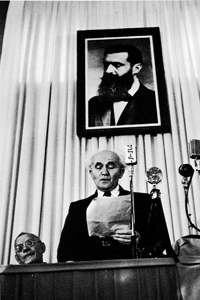
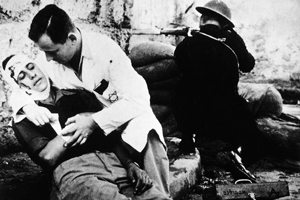

Lezione 21  La decolonizzazione
La decolonizzazione

-
350
589
-
125
279
-
370
615
-
420
500
-
310
600
-
390
575
-

ISRAELE
David Ben Gurion promulga la fondazione dello Stato d'Israele in questo celebre scatto del grande reporter di guerra americano Robert Capa.
GERMANIA
Durante le persecuzioni antiebraiche erano frequenti scene come questa: un gruppo di ebrei tedeschi si affolla di fronte ad un'agenzia di viaggi specializzata in rapporti con i paesi orientali sperando di emigrare in Palestina.
JAFFA
Un episodio del conflitto che prelude alla fondazione di Israele negli anni'40: un medico si affretta a soccorrere un ferito delle file ebree mentre un soldato prende la mira.EGITTO
Dopo la conferenza di Alessandria (1944) la Lega degli Stati arabi approva la Carta della Lega Araba(1945) per favorire l'unità e la cooperazione dei paesi arabi.
I paesi promotori sono: Egitto, Transgiordania, Iraq, Libano, Arabia Saudita, Yemen.LIBANO E SIRIA
Nel 1946, dopo una serie di scontri, Libano e Siria si rendono indipendenti dalla Francia.ISRAELE
Nel 1945 in Palestina vivono circa 1.300.000 arabi e 500.000 ebrei, in pessimi rapporti tra di loro.
Le immigrazioni in Palestina e l'acquisto di terre da parte degli ebrei erano cresciute di intensità dopo le persecuzioni naziste e le vicende dell'Olocausto. Gli inglesi nel 1948 rimettono il loro mandato nelle mani delle Nazioni Unite.
Nel maggio 1948, contemporaneamente al ritiro delle truppe inglesi, vi è la Proclamazione unilaterale dello Stato di Israele che, un anno dopo, verrà ammesso all'ONU. Nel gennaio 1949 si apre il primo conflitto armato arabo-israeliano.